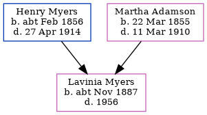

Lavinia Clements Myers cNov 1887 - 1956
[ Home ] | [ Calendar ] | [ Surnames Index ] | [ Family History ]The child of Henry Myers (a steamboat man) and Martha AdamsonLavinia Myers was born in North Shields, Tyne and Wear, England c. Nov 18871,2,3,4.
Throughout her life, she lived at Appleby Street in North Shields on 5 Apr 18911 and on 31 Mar 19012.
She died in 1956.
Parents
- Henry Briscoe Nicholson was born c. Feb 1856
- Martha Sarah was born on 22 Mar 1855
Citations
- 1891 England, Wales & Scotland Census - Findmypast (was age 3 and the daughter of the head of the household)
- 1901 England, Wales & Scotland Census - Findmypast (was age 13 and the daughter of the head of the household)
- ingdom, England;
- England & Wales births 1837-2006 - Findmypast
Media
England & Wales births 1837-2006 - BMD/B/1887/4/AZ/000396/100
Family Tree

Map
Generated by ged2site. Last updated on Feb 19, 2025